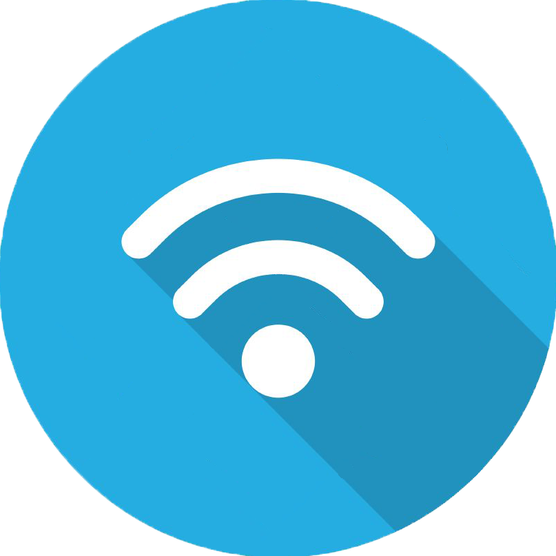

The Internet, Title II, and You.
Net Neutrality is the principle that Internet Service Providers(ISP's) and governments should treat all data on the Internet equally, not discriminating or charging differentially by user, content, site, platform, application, type of attached equipment, or mode of communication.
The internet currently operates on a principal called Open Internet. The Open Internet is the idea that the full resources of the internet and means to use all that information are easily available to everyone. Without Net Neutrality, ISP’s could charge companies to put them in a fast lane or grant them faster access to their website/web services. Smaller companies wouldn’t be able to pay the premium and it would increase the barrier of entry for newer companies. Not only would big businesses have an even greater advantage over small companies, overtime this increased barrier of entry would kill small business creation and negatively affect the content you as a consumer can access on the Internet. Furthermore, ISP’s would be able to charge you a “premium” fee to allow you to access all content at the same speed you were getting with larger companies. The end result is a lack of competitive services, a higher internet bill, and slowed job creation in general.
ISP’s can currently view all the data you use through a technique called deep packet inspection. Deep Packet Inspection allows ISP’s to see exactly what kind of data you are using from, including the type of content and the source, and subsequently allows them to block data from that source. This technique is frequently used by countries that practice internet censorship (e.g. China), to stop users from reaching Information. With deep packet inspection, ISP’s can block content from any source they choose to, including service competitors and bandwidth heavy applications.
While the principles of capitalism generally work in creating competition and increasing the quality of service, it doesn’t apply to ISP’s. ISP’s are essentially an oligopoly. An oligopoly is a market form in which a market or industry is dominated by a small number of sellers due to a high barrier of entry. New ISP’s have to pay premiums to use the infrastructure the cities have built that range within the millions. Furthermore, local municipalities have cut deals with current ISP’s that allow free services for them in exchange for lenient pricing and regulations. Have you ever wondered why you only have access to one ISP in your area? ISP’s have also made agreements with each other to create service areas. These types of collusion between ISP’s create artificial scarcity and drive up prices while providing no incentives to upgrade their services. However, when completion is introduced ISP’s react quickly. For example, the introduction of Google Fiber in Kansas City led to ISP’s in the areas slashing costs and nearly quadrupling the internet speed while keeping the connection more stable. So in short, the principles of capitalism work, however due to the aforementioned agreements and the high barrier of entry, it isn’t a huge force in the current market.
The Pew Research Center finds that the “coverage of Net Neutrality has been all but absent from network and cable news coverage”. The main reason behind this is that all major news networks are owned by huge telecommunication companies, for example NBC and NBC Universal are owned by Comcast. By and large the issue is kept out of the news to try and keep people uninformed about potentially huge changes in the way the internet is managed. Newspapers only fair a little better, out of all major U.S newspapers, only six consistently put out content related to the issue of Net Neutrality, and only three call out politicians taking huge donations from the telecommunication companies.
The policy on Net Neutrality has only recently appeared on the political lines, while Democrats generally favor Net Neutrality, Republicans oppose it. The primary reason that this issue split among party lines is because President Obama recently came out in support of Net Neutrality. This caused conservative hardliners like Sen. Ted Cruz, (R-Texas), House Speaker John Boehner,( R-Ohio), and House Majority Whip Steve Scalise, (R-La). to come out in opposition to Net Neutrality. What is interesting to note is that, in a survey conducted by University of Delaware's Center for Political Communication, They found that support for neutrality is strong and widespread -- regardless of gender, age, race and level of education. About 81% of Americans oppose allowing internet providers like Comcast and Verizon to charge Web sites and services more if they want to reach customers more quickly, that is, allowing what are often called "Internet fast lanes".Public perception polls seem to indicate that this is a bipartisan issue that has support from most of the general public. Many people advocate for a better , more free internet for all to use, and competition shouldn’t be gutted by increasing the barrier of entry for newer companies.
There is a huge disparity between the lobbying efforts of major telecommunications companies and pro net neutrality companies. ISP's both outspend and outlobby other companies; The top pro-neutrality organizations filed 176 lobbying reports mentioning net neutrality. But the top anti-neutrality organizations far outpaced them, filing 472 reports that mentioned net neutrality. That’s a 2.7-to-1 ratio. Furthermore, between the five top spenders in Net Neutrality, four were telecommunication companies against Net Neutrality, and only one was a tech giant pro Net Neutrality.
The crux of the fight between pro net neutrality and anti-net neutrality groups turns on whether the FCC should re-classify broadband companies as a “telecommunications service” instead of as an “information service.” Why does the label matter? In theory, it should not: the FCC could call Comcast a cat food company, and it would still provide the same services. But under FCC rules, the “telecommunications service” label is important because it triggers a series of obligations under Title II of the Communications Act of 1934.Those obligations, which cover everything from price-caps to closed-captioning to emergency services, have traditionally applied to “common carriers” like wireline phone companies, and place restrictions on how they run their business. That’s why broadband providers like Comcast and Verizon don’t want to live under Title II — they want to continue on as “information services” under a different part of the law (Title I) which involves a much lighter regulatory load.
The issue of Section 706 v Title II is really about what statute the FCC could lean on to regulate the Internet — either Title II of the 1934 Communications Act or Section 706 of the Telecommunications Act. Title II would allow the FCC to reclassify broadband as a telecommunications service, while Section 706 allows the FCC to regulate broadband infrastructure. One uses Title II to regulate business between Internet service providers and edge groups, and Section 706 to manage the relationship between edge groups and end users. What this means in laymans terms is that in theory section 706 would allow the FCC to make infrastructure for newer ISP's easier to access and lower the barrier of entry. That allows for greater competition between ISP's to provide better service, essentially solving the problem of the current oligopoly. However, the bill wording is vague and can possibly be manipulated and still doesn't address the issue of ISP deals with local governments, meaning the barrier of entry will still be unreasonably high.